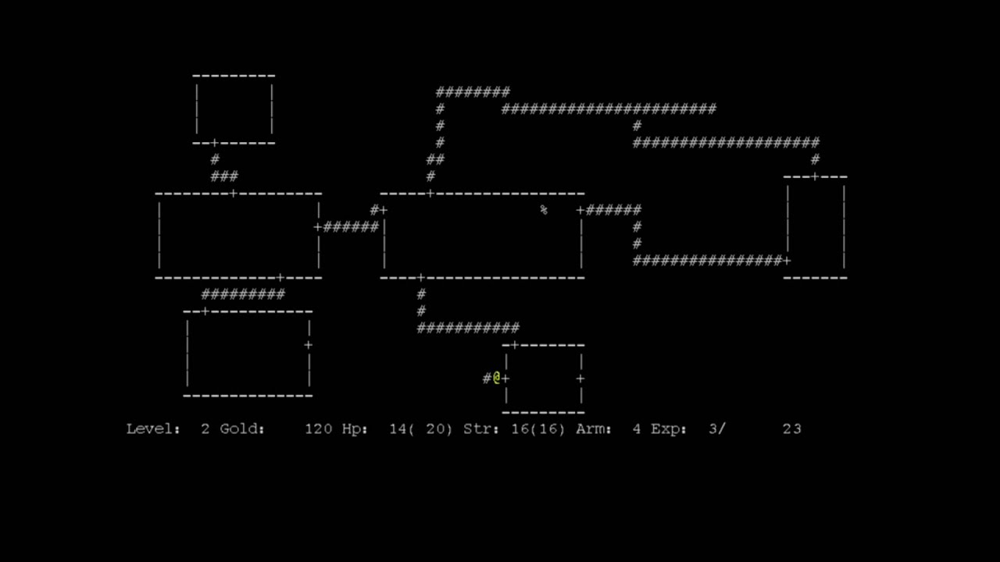
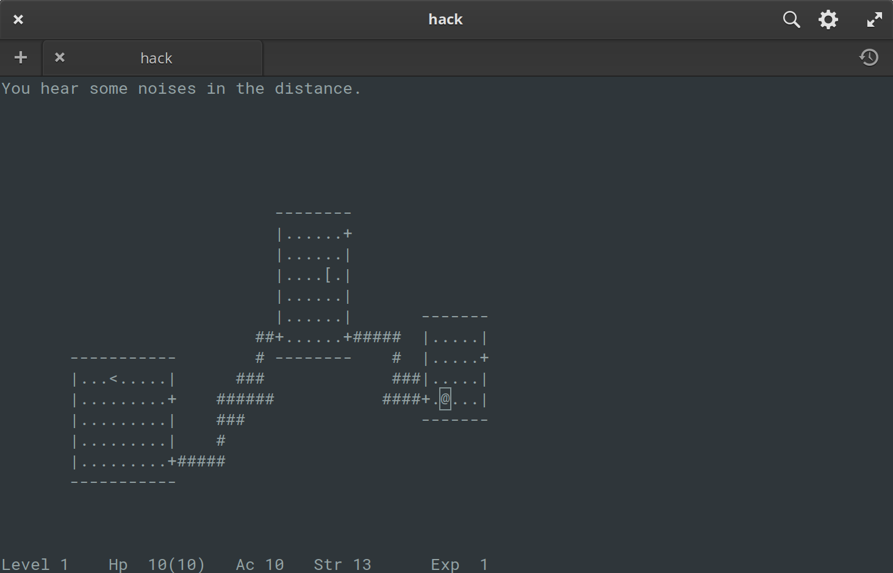
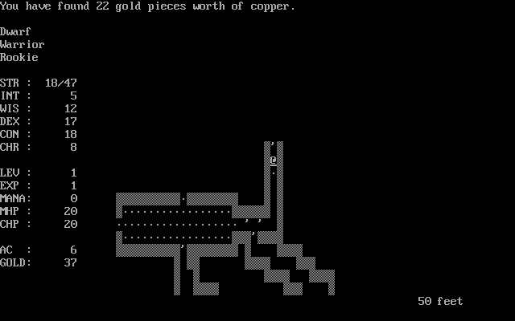
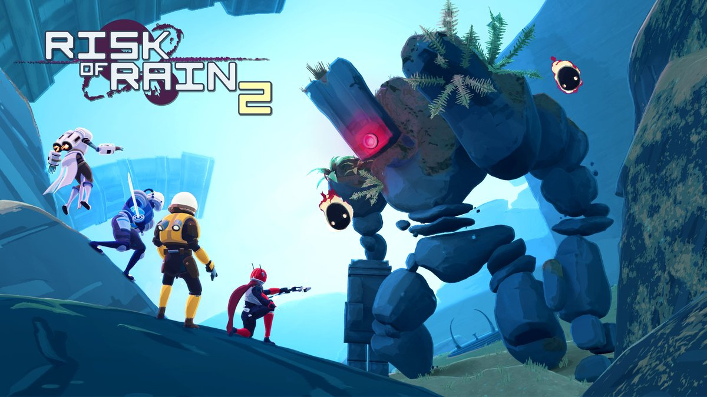
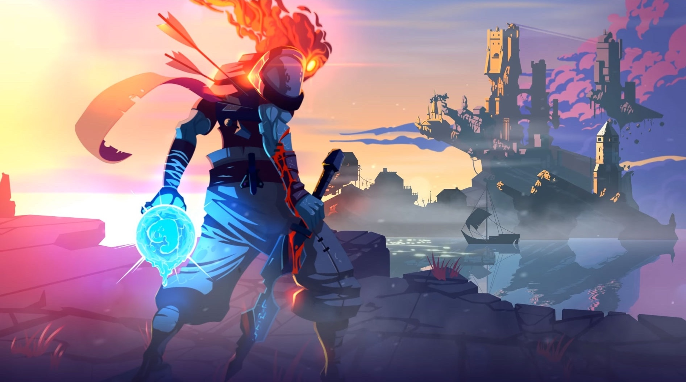
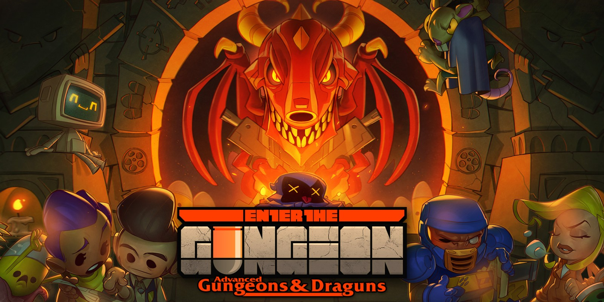
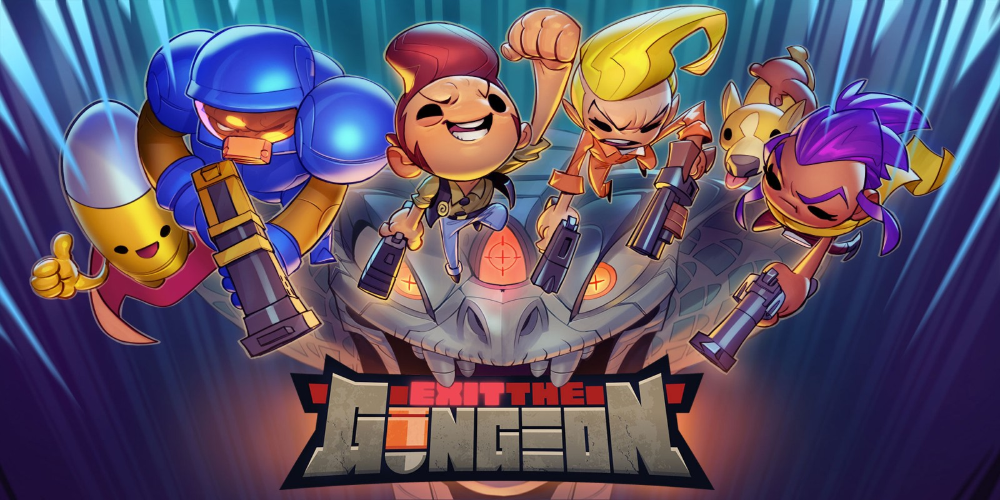
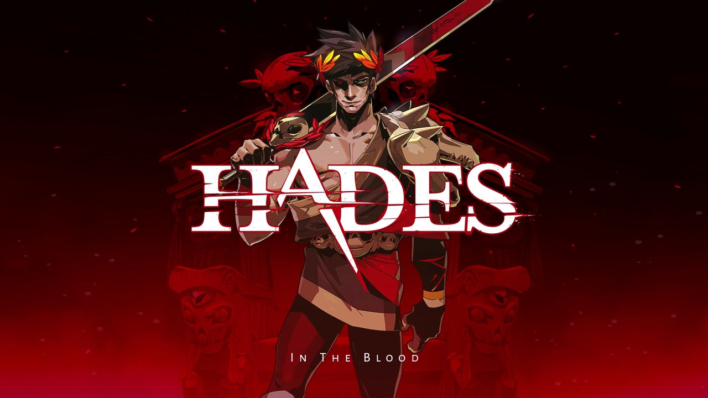

Что это за рогалики такие?
Невозможно подобрать точное определение этому термину, кроме его буквального значения («игра наподобие Rogue»). Можно сказать, что roguelike(рогалики) — это путешествия по рандомизированным подземельям почти без сюжета или с полным его отсутствием; игрок сражается и с самим подземельем, и с монстрами внутри, бесконечно повторяя этот процесс, чтобы освоить схемы, содержание и системы, определяющие природу игры, пока не умрёт и не начнёт заново.
Рождение первой игры
При помощи программной библиотеки Unix под названием curses, которая была своего рода инструментом для рисования в текстовом режиме, пара разработчиков создала приключение в подземном мире, в котором нужно было путешествовать с уровня на уровень, каждый из которых состоял из девяти или менее комнат, соединённых коридорами, в поисках Амулета Йендора. На самом деле, они не искали Амулет, он был всего лишь приманкой, наративной причиной спуска в опасное подземелье. При запуске новой игры уровни, свитки, оружие и расположение объектов рандомизировались. Разработчики распространяли исполняемые версии своей игры Rogue по всем кампусам Калифорнийского университета.
Рождение игр rogue-like
Первой игрой похожей на Rogue была Hack. Изначально она (1980-82 годы) была попыткой воссоздания Rogue, по памяти, потому что создатель игры Джей Фенласон отчаянно стремился играть в Rogue, однако не имел к ней доступа. Но благодаря помощи его одногруппников Hack быстро эволюционировала из грубого клона Rogue в игру, вдохновлённую Rogue. Вероятно, это была первая игра жанра Rogue-like. Два года спустя, в декабре 1984 года, голландский математик и программист по имени Андрес Броуэр нашёл эту кассету в архиве Centrum Wiskunde & Informatica (CWI). Заинтригованный, он начал играть. Вскоре Hack захватила его точно так же, как и Фенласона: не как игра, а как задача по программированию. За несколько последующих месяцев он опубликовал четыре новые версии, каждая из которых добавляла к оригиналу новые функции в соответствии с отзывами и предложениями коллег из CWI и фанатов игры в Usenet.
Тем временем, без ведома Броуэра и множества игроков в Hack из Usenet, в Оклахоме набирала популярность другая игра, вдохновлённая Rogue. Её история была очень похожа на историю Hack. Студент и лаборант отделения вычислительных наук Оклахомского университета Роберт Коенеке создал по памяти собственную версию Rogue. Эта версия имела тематику «Властелина колец»: зловещий Балрог, Проклятье Дурина, стал в ней охранником сокровищ в глубочайших закоулках подземелья. Роберт назвал игру Moria в честь огромных захваченных демонами шахт Мории Средиземья. Хотя Moria и Hack обычно называют источниками создания жанра roguelike, есть и другие простые roguelikes, выпущенные в этот период, которые я вкратце упомяну.
Лучшие рогалики
1. Risk of rain 2
Классическая сетевая rougelike-игра Risk of Rain возвращается, став глубже и сложнее. Бросьте вызов опасному миру в одиночку или объединитесь с четырьмя друзьями, чтобы уничтожить орды монстров, собрать артефакты и сбежать с враждебной планеты. С каждой попыткой вы будете все лучше узнавать повадки врагов и побеждать своим мастерством, даже когда перевес на их стороне. Благодаря уникальной системе подстройки сложности ваш герой и враги будут постоянно усиливаться, а тот, кто раньше был боссом, рано или поздно станет заурядным противником. В Risk of Rain 2 вас ждет огромное разнообразие уже знакомых выживших, предметов, врагов и боссов, а также множество новых персонажей. Грамотно используя преимущества и особенности классов, а также более 127 предметов, вы победите даже в самых жестких битвах.
2. The Binding of Isaac
Название игры и её сюжет отсылают к известному библейскому сюжету с тем же названием: главный герой, ребёнок по имени Исаак, прячется в подвале дома от матери, которой «голос Бога» повелел убить сына. Управляя Исааком или другим из шести персонажей на выбор, игрок должен пройти через несколько уровней подвала, состоящих из множества процедурно генерируемых комнат. Внутри комнат игровой процесс оформлен в виде шутера — персонаж должен, «стреляя» собственными слезами, убить врагов. По словам Макмиллена, игра затрагивает такие темы, как жестокое отношение к детям, половая идентичность, детоубийство, пренебрежение, самоубийство, аборт, а также как религия может навредить ребёнку — темы, которых обычно стараются избегать
Управляя Исааком или другим из шести персонажей на выбор, игрок должен пройти через несколько уровней подвала, состоящих из множества процедурно генерируемых комнат. Внутри комнат игровой процесс оформлен в виде шутера — персонаж должен, «стреляя» собственными слезами, убить врагов. По словам Макмиллена, игра затрагивает такие темы, как жестокое отношение к детям, половая идентичность, детоубийство, пренебрежение, самоубийство, аборт, а также как религия может навредить ребёнку — темы, которых обычно стараются избегать
3. Dead cells
Dead Cells - это roguelike-платформер, вдохновленный Castlevania, позволяющий исследовать обширный, постоянно меняющийся замок… В ходе Dead Cells вы управляете существом, пытающемся выбраться из лабиринта. Уровни игры, выполненные в духе двухмерного платформера, генерируются процедурным образом; по ним разбросаны враги и различные сокровища, в том числе оружие со случайно генерируемыми характеристиками. Чтобы пройти игру, вам придется освоить двумерный бой, подобный souls-like играм, с постоянной угрозой нависшей над вами смерти. Контрольных точек нет. Убивай, умирай, учись, повторяй.
4. Enter the Gungeon и Exit the Gungeon
Enter the Gungeon - это подземелье с перестрелками, которое следует за группой неудачников, которые стремятся стрелять, грабить, уклоняться и переворачиваться, чтобы добиться личного отпущения грехов, достигнув главного сокровища легендарного Оружелья: оружия, которое может убить прошлое. Выберите героя и проложите себе путь на дно Оружелья, преодолев сложную и развивающуюся серию этажей, заполненных опасно очаровательными Оружейщиками и грозными боссами Оружедья, вооруженными до зубов. Собирайте драгоценную добычу, открывайте скрытые секреты и общайтесь с предприимчивыми торговцами и владельцами магазинов, чтобы покупать мощные предметы, чтобы получить преимущество и убить свое прошлое.
Exit the Gungeon - это bullet hell dungeon climber, который следует сразу же после приключений неудачливых Оружельцев и их пути к личному отпущению грехов в «Enter the Gungeon». Вооруженный постоянно меняющимся оружием, неутолимой потребностью в добыче и верным уклонением, каждый из героев должен подниматься и убегать по своему уникальному маршруту, состоящему из все более и более опасных лифтов. Изменяющиеся комнаты, враги, боссы, причудливое оружие и предметы - все это вместе, чтобы гарантировать, что никакие две попытки выйти из Gungeon не будут одинаковыми.
5. Hades
Сюжет игры основана на древнегреческой мифологии: главный герой Загрей, сын Аида, пытается сбежать из подземного царства мёртвых и добраться до горы Олимп; на этом пути ему помогают боги-олимпийцы, посылающие Загрею те или иные дары. В каждом прохождении игрок должен преодолеть серию собранных случайным образом комнат с врагами и наградами; в случае смерти Загрей возвращается в самое начало пути, хотя игрок может потратить собранные за время прохождения сокровища и на улучшение характеристик или разблокировку новых видов оружия. Многочисленные прохождения Hades связываются воедино разнообразными сценами и диалогами, раскрывающими предысторию игры и отношения её персонажей.
Есть что добавить?
.jpg)